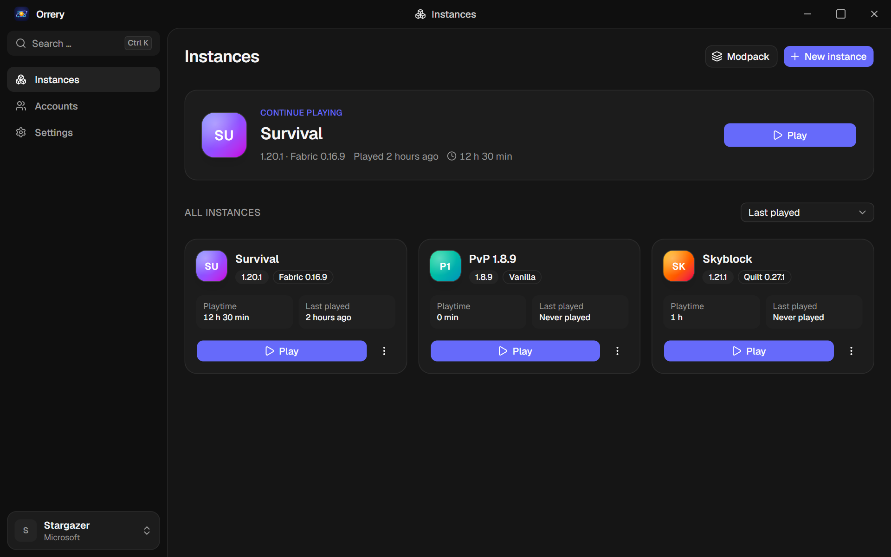

Free Open source · No ads · No telemetry
Your instances. In perfect orbit.
Orrery is an independent, open-source launcher for Minecraft: Java Edition. It installs, manages and starts every version, with its own mods, worlds and settings per instance.
Windows · macOS (Apple Silicon and Intel) · Linux

Features
Everything a launcher should do, nothing it should not.
From the first install to the hundredth modpack, Orrery keeps each setup clean, checked and easy to get back to.
Instances that stay separate
Each instance has its own version, mod loader, mods, memory and window settings. Bring your existing setups along: Orrery imports from Prism Launcher, MultiMC, Modrinth App, CurseForge, ATLauncher, GDLauncher and the official launcher.
Mods and modpacks
Fabric, Legacy Fabric, Quilt, Forge and NeoForge. Mods, resource packs, shaders and modpacks from Modrinth and CurseForge, with dependencies and updates.
Java included
The right Java runtime for every version, set up automatically. Mojang's runtimes first, Eclipse Adoptium as a fallback.
Worlds and backups
Back up and restore worlds, jump straight into one with Quick Play, and undo a deletion from the trash.
Help when the game crashes
A live game log, crash detection with the likely cause and a memory recommendation for every instance.
Fast by default
A one-click performance pack, game options tuned to your hardware and a dedicated GPU preference on Windows.
Checked downloads
Every file is verified against its published hash and written atomically. Launcher updates are signed.
Open source, all of it
Written in Rust and TypeScript with Tauri 2. The launcher, the companion mod and the menu pack are on GitHub under the GPL-3.0 license. Read the code, file an issue or build it yourself.
Orrery Companion
An optional mod for a calmer game.
For Fabric and Quilt on 1.20.1, 1.21.11 and 26.3. It adds the Orrery title screen, display modules and emotes that only you see. Switch it off per instance whenever you like.
- FPS
- Coordinates
- Clock
- Keystrokes
- CPS
- Durability
- Status effects
- Zoom
- Crosshair editor
- Chat timestamps
- Waypoints
- Emotes
- Off until you switch it onEvery module starts disabled.
-
Servers stay in chargeAny server can switch
modules off through the
orrery:policychannel. - No unfair advantagesNothing automates movement or combat, changes brightness or reveals hidden information.
- No cosmetics, no capesThe only capes in your game are the official ones your profile owns.
- Safety settings respectedParental controls and multiplayer restrictions apply as in the vanilla game.
Sign-in
Your account, signed in through Microsoft.
Playing requires a Microsoft account that owns Minecraft: Java Edition. Orrery does not sell, unlock or bypass the game.
Microsoft's own sign-in page
You sign in on Microsoft's own page in your browser and choose the
account there. A code for microsoft.com/link is the
fallback. Orrery never sees your password, two-step codes or recovery
details.
Ownership checked on every start
Every game start, in singleplayer and on any server, signs in again online and checks with Mojang that the account owns the game. The player name and UUID come from that verified profile. Without internet or when the check fails, the game does not start.
Tokens stay on your computer
Only the XboxLive.signin and offline_access
scopes are requested. The refresh token lives in your system keychain,
the Minecraft access token only in memory. Account data goes to
Microsoft, Xbox Live and Minecraft services, never to a server of ours.
No shortcuts
No offline accounts, no username-only profiles, no demo mode and no alternative authentication services. No development or testing switch skips the sign-in. Capes come only from your own Minecraft profile.
Status: Mojang has not yet approved Orrery's Microsoft app registration for Minecraft services. Until then, signing in stops after the Microsoft step with a clear message, and no game can be started.
FAQ
Questions, answered.
Is Orrery free?
Yes. Orrery is free of charge, has no ads and no paid features, and its source code is public under the GPL-3.0 license.
Do I need to own Minecraft?
Yes. You sign in with the Microsoft account you bought Minecraft: Java Edition with. Orrery checks with Mojang that the account owns the game before every start.
Can I play without internet?
No. Every game start signs in online and verifies ownership. Without internet you can still open Orrery and look at your instances.
Is Orrery an official Minecraft product?
No. Orrery is an independent project. It is not approved by or associated with Mojang or Microsoft.
Does Orrery offer capes or cosmetics?
No. You can choose between the official capes your Minecraft profile owns. Orrery adds no capes and no cosmetics of its own.
What does Orrery do with my data?
Nothing leaves your computer except the requests needed to sign in, download game files and install content. The privacy page lists every service and what it receives.
Which systems are supported?
Windows 10 and 11, macOS on Apple Silicon and Intel, and Linux as AppImage, deb and rpm. The AppImage updates itself.
Download
Ready in a minute.
Pick your system, sign in with Microsoft and start playing.
Installers for Windows, macOS and Linux on GitHub.